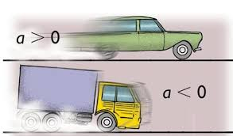

O que é MRUV na Física?
O Movimento Retilíneo Uniforme Variado ou MRUV é o deslocamento de um corpo, que ocorre em uma trajetória retilínea, ou seja, em linha reta e que não pertence a qualquer curva ou circunferência. Ao longo do tempo, a velocidade varia constantemente.
Isso significa que o MRUV considera percursos em que a velocidade pode ser maior ou menor ao longo do tempo. Para isso, é necessária a ação da grandeza “aceleração”, que é representada por a e medida em m/s². Essa aceleração pode ser negativa ou positiva, e nunca pode ser igual a zero. Por exemplo, considerando o exemplo da figura, temos um carro em linha reta, onde a sua velocidade ao longo do tempo aumenta. Consequentemente, a aceleração é maior que zero. Logo embaixo, temos um caminhão freando, ou seja, a sua velocidade ao longo do tempo está diminuindo, consequentemente, a sua aceleração é negativa.
Veja as equações importantes sobre o MRUV:
- Aceleração: é representada por a e medida em m/s². Varia de acordo com a velocidade e o tempo percorrido.
- Fórmula: a = V - V0 / t - t0
-
- V = velocidade final em m/s
- V0 = velocidade inicial em m/s
- t = tempo final em segundos
- t0 = tempo inicial em segundos
- Δs = variação de espaço em metros
- S = posição final em metros
- S0 = posição inicial em metros
- Equação horária da velocidade: é a equação em que velocidade varia em função da aceleração e do tempo.
- Fórmula: V = V0 + a.t
- Equação horária da posição: A partir de estudos gráficos, os físicos desenvolveram uma fórmula que permite encontrar a posição (S) de um móvel que se desloca em MRUV:
- Fórmula: S = S0 + V0.t + a.t²/2
- Equação de Torricelli: Uma terceira fórmula é importante para o estudo do MRUV, ela é conhecida como equação de Torricelli e relaciona a velocidade, o deslocamento e a aceleração do móvel na trajetória. Essa expressão matemática surgiu pela substituição de V = V0 + a.t na equação de S = S0 + V0.t + a.t²/2.
- Fórmula: V² = V0² + 2a.Δs